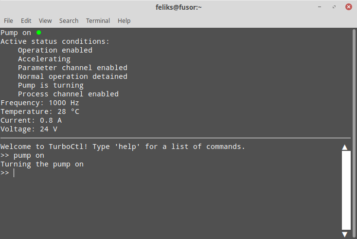

Usage¶
Running the program¶
Installing TurboCtl via pip sets up a turboctl command so that TurboCtl can be run with
$ turboctl <args>
from any directory.
If you performed a manual install by downloading TurboCtl from GitHub, you can do the same with the turboctl-run script found in the TurboCtl directory:
$ path/to/TurboCtl/turboctl-run <args>
Note that this script isn’t automatically accessible from an arbitrary directory, so you need to provide the full path when running the command, add the TurboCtl directory to you $PATH shell variable, or have TurboCtl as your working directory.
Behind the scenes both of these methods run the __main__.py script inside the turboctl package. __main__.py can be run directly without any auxiliary scripts with
$ python path/to/TurboCtl/turboctl <args>
Note that the python command might be set up under a different name such as python3 on your system.
Command-line arguments¶
Regardless of the command used to run it, TurboCtl accepts the following command-line arguments:
- -h, --help¶
Show a help message that lists all command-line arguments.
- -p, --port <port>¶
Define the port used for the serial connection.
If this argument isn’t supplied, the default port
/dev/ttyACM0will be used.
- -v, --virtual¶
Run TurboCtl with a virtual pump.
If this argument is supplied, instead of sending messages to a real pump, TurboCtl creates a simulated, virtual one and sends messages to that. This makes it possible to test TurboCtl easily without having to connect to a real pump. This option is incompatible with
-p.
- -s, --simple¶
Run TurboCtl with a simple command-line interface that doesn’t require Urwid.
If TurboCtl is run without the
-sargument, a more advanced UI will be used.
- -n, --no-poll¶
Don’t send automatic telegrams to the pump.
The pump automatically turns off if it doesn’t receive any commands for about 10 seconds. Normally TurboCtl sends automatic telegrams to the pump at regular intervals in order to prevent this from happening, and also to keep the status screen in the advanced UI updated. This argument prevents these automatic telegrams from being sent.
- -t, --test¶
Instead of running the TurboCtl program, run all automatic tests for it.
The user interface¶
The simple UI (which is used when the -s argument has been given) consists of a basic command line interface that runs in the Linux terminal.
The more advanced UI takes over the entire terminal screen, and features a screen displaying the current status of the pump in addition to the command-line interface.
In the advanced UI, the area of the command-line interfacew can be scrolled by using the mouse wheel, or by clicking on or dragging the custom scroll bar on the right side of the area. In the simple UI, scrolling is done with the mouse wheel or by using the built-in terminal scroll bar. In both UI modes, command history can be accessed by using the up and down keys.
Commands are given to the UI by writing the name of the command, followed by
its arguments, all separated by spaces. The arguments are parsed with
ast.literal_eval() which recognizes some basic Python objects such as
tuples and lists.
Note that spaces are only accepted between arguments, so an argument of
[1,2,3] is correctly interpreted as a list, but [1, 2, 3] will raise
an error.
All arguments that cannot be parsed into other object types are interpreted as
str objects, so it isn’t necessary to use quotes around string
arguments.
Most commands have at least one alias, which can be used instead of the longer proper command name.
Command list¶
The following is a list of all the commands recognized by the UI.
The same list can be displayed in the UI by issuing the help command.
Commas separate the full name of the command from its aliases.
Angle brackets <> indicate required arguments, while square brackets [] display optional arguments with their default values.
- pump <value>¶
Turn the pump on or off.
Values of
1,'True'and'on'turn the pump on;'0','False'and'off'turn it off.
- status, s¶
Get the status of the pump.
- reset, re¶
Reset the error status of the pump.
- read, r <number> [index=0]¶
Return the value of parameter number, index index.
- write, w <number> <value> [index=0]¶
Write value to parameter number, index index.
- info, i <letter> <number>¶
Display information about parameters, errors, or warnings.
letter should be
'p','e', or'w'depending on whether numbers refer to parameters, errors, or warnings.numbers should be a list or a tuple of the numbers of those parameters/errors/warnings that should be displayed. It can also be a single number or
'all', if only a single parameter/error/warning or all of them should be listed.
- exit, e, q, x¶
Exit the UI.
- help, h [value=None]¶
Display a help message.
value should be the name or an alias of the command that should be described. If no value is specified, all commands are listed and described.
- docs, d¶
Open TurboCtl documentation in a browser.
- debug, db <value>¶
Activate or deactivate the debug mode.
Values of
'1','True'and'on'activate the debug mode;'0','False'and'off'deactivate it.In normal operation, TypeErrors and ValueErrors raised during the execution of commands are caught to prevent users from crashing the program with invalid commands. Activating the debug mode disables this error-catching in order to make debugging easier.
- verbose, v <value>¶
Activate or deactivate the verbose mode.
Values of
'1','True'and'on'activate the verbose mode;'0','False'and'off'deactivate it.When the verbose mode is on, commands that send telegrams to the pump will print all the contents of the telegram and the reply to the screen.
Using Screen¶
As mentioned above, the pump turns off if it doesn’t receive any messages
for about 10 seconds. If TurboCtl is run without the -n argument, it will
send automatic messages which keep the pump on, but the pump will turn off soon
after TurboCtl is closed.
If TurboCtl is used on a local computer, it can simply be left running in the background. However, if TurboCtl is run over an SSH connection, it cannot be left running after the connection has been closed without using a third-party program. An easy way to accomplish this is to use Screen. This is done as follows:
Install Screen with your package manager. For example, on operating systems based on Debian or Ubuntu, this is done with the command
apt install screen.Log into your remote machine via SSH.
Start Screen by issuing the
screencommand.Launch TurboCtl and use it as you would normally.
Press
Ctrl-Aand thenCtrl-Dto detach the Screen session where you are running TurboCtl. This will leave TurboCtl running in the background even after you close the SSH connection.Whenever you log back into your remote machine, you can resume the old Screen session with
screen -r. You can end the screen session by closing TurboCtl and then giving theexitcommand. Note that due to a bug the advanced UI screen of TurboCtl will disappear only after the Screen session is closed, even though it should disappear immediately after closing TurboCtl.